本地阅读版，依据出版社提交至PMC的原始JATS XML整理，供核对正文、图注、表格和原图。原始main.xml完整保留；此页不是出版社版式PDF。所有数字与正文冲突均保留原文，未修正或推算。实验准入状态见逐篇审核表。
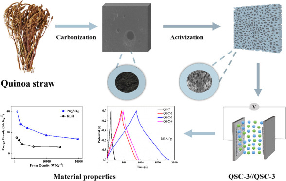
This work presents a novel porous activated carbon electrode based on quinoa straw (QSC), which is derived from the Qinghai-Tibet Plateau. The QSC is prepared through simple precarbonization and potassium carbonate (K2CO3) activation processes and is intended for use in supercapacitors. The QSC-3 exhibits a high specific capacitance of 469.5 F g–1 at a current density of 0.5 A g–1, as well as a high specific surface area of 1802 m2 g–1. Additionally, symmetrical supercapacitors assembled using QSC-3 samples demonstrate a superior energy power density. In a 3 M KOH electrolyte, the energy density can reach 15.0 Wh kg–1 at a power density of 689.7 W kg–1. In a 1 M Na2SO4 electrolyte, the power density reaches 999.00 W kg–1, and the energy density is 39.68 Wh kg–1. Furthermore, the device shows excellent cycle life in both 3 M KOH and 1 M Na2SO4 electrolytes, with capacitance retentions of 97.55% and 96.20% after 10 000 cycles, respectively. This study provides an excellent example of utilizing waste quinoa straw to achieve low-cost, high-performance supercapacitor electrode material for sustainable electrochemical energy storage systems.
Given the rapid pace of global economic development, there is a serious demand for green, low-cost, efficient, and sustainable energy storage devices and conversion technologies. Supercapacitors have gained significant attention among advanced energy storage devices because of their high power and energy densities, rapid charge–discharge speed, extended cycle life, and environmentally friendly properties.1 However, the primary limitation of most commercial supercapacitors is their inadequate capacitance. To ensure a consistent supply of energy, it is crucial to ameliorate the capacitance of supercapacitors.
According to different working principles, supercapacitors can be mainly classified into two categories: electric double-layer capacitor (EDLC) and pseudocapacitor.2 The operation of EDLC is based on the electrostatic accumulation of charges at the interface connecting the electrode and electrolyte, such as carbon materials. On the other hand, pseudocapacitor charge storage occurs via fast reversible redox reactions on the surface of the electrode materials (metal oxide materials),3 so as to realize energy storage and conversion. Due to their high specific surface area, chemical and physical stability, and excellent conductivity, porous carbon materials have a wide range of applications as EDLC electrode materials. Commercial supercapacitor electrode materials are mainly made of carbon materials, such as graphene,4 carbon fibers,5 carbon nanotubes,6 carbon aerogels,7 and activated carbon.8 These materials have good cycle stability, a hierarchical porous structure, high specific capacitance, and are easy to dope with heteroatoms.
In recent years, biomass-derived carbon materials have garnered increased attention as supercapacitor materials owing to their sustainability, eco-friendliness, renewability, low cost, high output, and easy availability.9 Examples include Faidherbia albida fruit shell,10 corn straw,11 tobacco straw,12Typha angustifolia,13 rapeseed cake,14 hemp straw,15 wheat straw,16 among others. Biomass materials with hierarchical structures and abundant heteroatom groups (such as O, N, and S) can provide additional pseudocapacitance on the material surface, thus promoting the transfer of electrolyte ions. As a result, developing biomass-derived materials with more interconnected channels and active functional groups is a significant research area. The main production area of quinoa is Wulan County in Haixi Prefecture, Qinghai Province, China. After the quinoa harvest, quinoa straw becomes a waste byproduct and a major environmental issue. Burning straw causes both environmental pollution and resource loss. Fortunately, quinoa straw is a sustainable, low-cost, natural biomass source. It exhibits a high carbon content and is rich in heteroatomic functional groups. The straw possesses a sturdy hollow structure and is also characterized by an abundance of sieve tube tissues. Typically, carbon materials need to be carbonized using a hydrothermal or high-temperature treatment method before use and then activated using various methods.17 Most carbon materials use KOH as an activator, but it can cause equipment corrosion.10,11 The resulting materials must be washed with a certain concentration of hydrochloric acid and distilled water to achieve neutralization, which is not very environmentally friendly or sustainable in experimental settings. In this study, K2CO3 was chosen as the activator to reduce pollution during the preparation process, promoting environmental protection and carbon neutrality.
In this work, quinoa straw-based porous carbon (QSC) is successfully prepared by carbonization and activation processes, serving as a novel precursor for carbonaceous materials. The morphology and structures of QSC samples were characterized, which exhibit an interconnected morphology of an abundant pore structure after K2CO3 activation. The prepared supercapacitors from quinoa straw-based materials were studied in both two- and three-electrode systems. When the K2CO3 to carbon weight ratio is 3:1, the as-prepared materials (QSC-3) exhibit remarkable electrochemical performance, including high specific capacitance and high cyclic stability. The assembled symmetric supercapacitors QSC-3//QSC-3 demonstrate higher power and energy density. Additionally, the QSC surface contains abundant oxygen and nitrogen heteroatom groups that can contribute to additional pseudocapacitance, thereby enhancing the conductivity of electrode materials and increasing their energy storage performance. Hence, using quinoa straw as a carbon source for supercapacitor production emerges as a valuable approach to developing cost-effective, sustainable, and high-performance capacitor materials while also presenting a promising opportunity for the utilization of waste natural resources.
The raw material, Quinoa Straw, was sourced from Xizhuang Village in Haixi Prefecture, Qinghai Province, and China. Potassium carbonate (K2CO3), hydrochloric acid (HCl), and ethanol (EtOH) of A.R. grade were purchased from Shanghai Aladdin Biochemical Technology Co., Ltd. (China). Nickel foam was supplied from Changsha Liyuan New Materials Co., Ltd. (Changsha, China). Acetylene black and 60% polytetrafluoroethylene lotion (PTFE) were offered from the National Pharmaceutical Group Chemical Reagent Company (China). Ultrapure water was used throughout the experimental processes.
Quinoa straw (QS) was cleaned by being soaked and washed with water to eliminate surface dust. The cleaned QS was dried in an oven at 60 °C for 48 h. QS was grinded (through a 40-mesh sieve) and placed in a crucible to be precarbonized in an electric resistance furnace at 600 °C for 2 h. In quartz boats, carbonized QSC and K2CO3 were thoroughly ground and mixed in a certain proportion. The mixtures were then placed into a tube furnace and heated at a rate of 5 °C min–1 under a nitrogen atmosphere to 800 °C for 2 h for activation. The resulting activated samples were cooled naturally under a nitrogen gas flow, washed with 1 M HCl and ultrapure water until neutral, and dried at 80 °C for 8 h in a vacuum oven. These final samples were designated as QSC-x, with x (equal to 2, 3, or 4) representing the mass ratio of K2CO3 to QS. The detailed experimental process is shown in Figure 1.
Preparation of biomass porous carbon from waste quinoa straw.
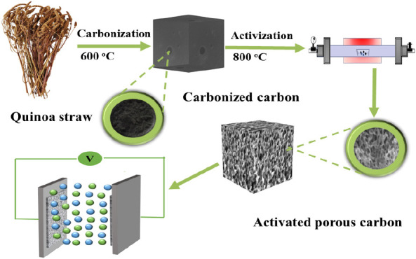
Scanning electron microscopy (SEM, SU8000, Hitachi Co.) was employed to observe the morphology of the QSC. The crystal structure was determined using X-ray diffraction (XRD, XRD-6100, Japan). The specific surface area and porous structure of the QSC materials were evaluated using a N2 adsorption–desorption analyzer (BET, 3H-2000PS1, Beijing Beide Instrument Technology Co. Ltd.). The elemental composition was investigated through X-ray photoelectron spectroscopy (XPS, Thermo ESCALAB 250XI).
The working electrode based on QSC was prepared using activated carbon materials, a conductive acetylene black agent, and polytetrafluoroethylene (binder, PTFE) with a mass ratio of 80:10:10. The obtained slurry was uniformly coated on a 1 × 2 cm2 foam nickel collector. Each sheet of the loaded electrode contained QSC active materials with a mass of about 2–3.0 mg. The coating collector was dried in a vacuum oven at 70 °C for 12 h. Then, the nickel foam sheets were compressed under a pressure of 10 MPa to obtain the working electrode.
The electrochemical characterizations of QSC were measured by a CHI760E electrochemical working station (Chenhua, Shanghai, China) in a three-electrode system. The QSC-activated carbon material served as the working electrode, platinum sheet (1 cm × 1 cm) as the counter electrode, Hg/HgO as the reference electrode, and 3 M KOH as the electrolyte. Cyclic voltammetry (CV) testing was conducted at a scanning rate of 5–100 mV s–1 under a voltage window of −1.0–0.0 V. At the same voltage as the CV, the galvanostatic charge–discharge (GCD) measurement was performed and determined under different current densities (0.5–10 A g–1). The specific capacitance (Cs) value was determined based on the discharge time (GCD curve) in a three-electrode system, the calculation equation is as follows:11
1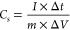
In the aforementioned equation, Cs (F g–1) represents the specific capacitance, I (A) denotes the discharge current, Δt (s) stands for the discharge time, m (g) represents the mass of the active material, and ΔV (V) indicates the voltage window.
A symmetrical supercapacitor (QSC-3//QSC-3) was assembled using the selected QSC-3 activated carbon material electrode. In a two-electrode system, the capacitance performance of symmetric QSC-3//QSC-3 was tested in 3 M KOH and 1 M Na2SO4 electrolytes, respectively. The gravimetric capacitance (Cs, F g–1), energy density (E, Wh g–1), and power density (P, W g–1) of the assembled QSC-3//QSC-3 device were reckoned according to the following equation:11
2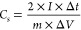
3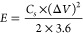
4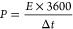
Figure 2a shows a schematic diagram of the conversion of QSC to porous carbon. Figure 2b–g displays the surface morphology of QSC, QSC-2, QSC-3, and QSC-4 by SEM. The carbonized samples (Figure 2b) are relatively smooth and dense, with very few pores (a small number of pores), which can lead to high resistance during the process of charge transfer on the material surface. Upon comparing the SEM images (QSC-2, QSC-3, and QSC-4), it was discovered that chemical activation with K2CO3 is crucial in etching a porous structure into the carbon framework. During the activation reaction process, K2CO3 reacts with the precursor (carbon materials) to generate K2O, CO2, K, and CO. QSC-2 (Figure 2c) presents a highly developed porous structure on its surface, with small and large pores interlaced with each other. In contrast, QSC-3 (Figure 3e–g) features a hierarchical pore structure. The abundant pores can effectively facilitate the penetration of electrolyte ions, provide more electrochemically active site, and enhance the stability of materials. The porous structure can not only improve ion diffusion channels but also reduce transmission resistance, which enhances the charge storage capacity of the material.18 QSC-4 (Figure 2d) exhibits a clear honeycomb-like porous layered structure, but the complete pore structure collapses, which may be caused by excessive use of the activator. This indicates that excessive activation can damage the pore structure and reduce the specific surface area of the material.19 The main reaction mechanism for K2CO3 activation involves an initial solid–solid reaction, followed by a solid–liquid reaction, the main reaction process is as follows:14
5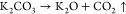
6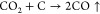
7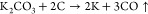
8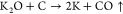
(a) Schematic diagram of QSC conversion into porous carbon, SEM images of QSC (b), QSC-2 (c), QSC-4 (d), and QSC-3 (e–g).
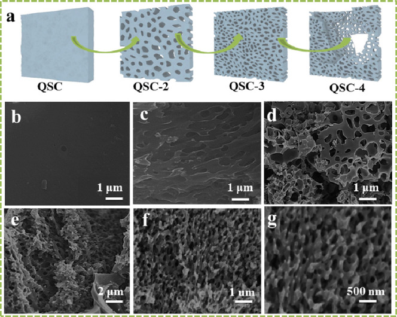
XRD (a) and Raman spectroscopy (b) of QSC, QSC-2, QSC-3, and QSC-4.
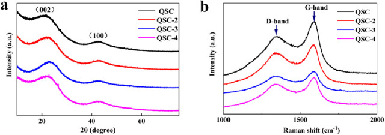
From these reactions, the activation of K2CO3 plays an important pore-forming role in constructing QSC materials with porous network structures. These graded porous carbon materials provide a source of high-quality electrode materials for supercapacitors.
Figure 3a displays the XRD patterns of the four activated carbon materials. In all QSC samples, two main peaks appeared near 23° and 43°, corresponding to the (002) and (100) planes of relatively low microcrystal graphite carbon.20 The QSC-2, QSC-3, and QSC-4 samples did not exhibit any other featured peaks, indicating the formation of typical graphene carbon structures. The broad peak at 23° indicated the amorphous nature and low degree of graphitization of the QSC samples. With an increase in K2CO3 dosage, the intensity of the diffraction peak significantly weakens, indicating the destruction of the pore structure by an excessive amount of K2CO3. Furthermore, this observation also confirms the pore-forming effect of K2CO3 from another perspective, which is consistent with the SEM analysis results.
Figure 3b presents the Raman spectroscopy results of all of the QSC samples. The QSC and QSC-x samples exhibit two well-defined peaks at 1344 and 1589 cm–1, corresponding to the D band associated with defects and disturbances in the graphite structure and the G band resulting from the vibration of sp2 hybrid carbon atoms,21 respectively. The degree of graphitization in carbon materials is commonly evaluated by using the ID/IG ratio. With an increase in K2CO3, the ID/IG values are 0.78, 0.83, 0.88, and 0.82, respectively. Notably, the QSC-3 sample exhibits a higher ID/IG value of 0.88 compared with the other samples, indicating a lower degree of graphitization. This could be attributed to the etching effect of K2CO3, which increases the number of pores and introduces disorder in the carbon material structure. This implies that the activation process reduces the degree of graphitization and elevates the defect level of carbon atoms. Consequently, it facilitates electron conduction and improves the cycling efficiency of the electrode.
To further investigate the pore structure and surface porosity of QSC and QSC-x materials, N2 adsorption–desorption tests were conducted on all samples at 77.3 K. Table 1 presents the specific surface area, pore volume, and pore size parameters of the QSC carbon materials. Figure 4a–d displays the isotherms of the QSC and QSC-x samples, which can be classified as type-I and type-IV isotherms according to the IUPAC classification.22 In the low-specific pressure zone (P/P0 < 0.2), the curves exhibit a steep increase, indicating the presence of numerous micropores. At higher pressures (P/P0 > 0.4), a hysteresis loop is observed, indicating the existence of mesopores in the materials. The slight increase in the curves at high relative pressure (0.9 < P/P0 < 1.0) is associated with a certain number of macropores. The inset in Figure 4a–d shows the pore size distribution curve of the QSC-x material, confirming the abundance of micropores as well as a small amount of mesopores and macropores. The SEM experimental results also support the presence of a hierarchical porous carbon structure in the activated QSC-x material, making it suitable for use as an electrode material for supercapacitors. The mesopores and macropores provide additional pathways for electrolyte ion transfer, while the micropores offer space for energy storage.18Table 1 summarizes detailed information based on the specific surface area of QSC and QSC-x samples. Compared to the unactivated QSC sample, the BET-specific surface area (SBET) of QSC-x significantly increased, with QSC-3 exhibiting the highest value (SBET = 1802 m2g–1). As the mass ratio of the activator to inactive carbon increases, the SBET and microporous surface area (Smicro) of the activated QSC-x material initially increase and then decrease. These results indicate that an appropriate amount of K2CO3-etched carbon material can form a microporous structure, thereby increasing the specific surface area of QSC-x. However, excessive K2CO3 can cause the microporous structure to collapse, resulting in a reduction in the specific surface area. Therefore, an appropriate amount of K2CO3 is necessary for achieving optimal results.
| samples | SBET(m2g–1) | Smicro(m2g–1)a | Vtotal(cm3g–1)b | Vmicro(cm3g–1)c | Vmeso(cm3g–1)d |
|---|---|---|---|---|---|
| QSC | 365 | 283 | 0.189 | 0.159 | 0.026 |
| QSC-2 | 708 | 396 | 0.342 | 0.238 | 0.112 |
| QSC-3 | 1802 | 1163 | 0.756 | 0.615 | 0.147 |
| QSC-4 | 886 | 504 | 0.433 | 0.304 | 0.139 |
Smicro is the surface area of the micropores.
bVtotal is the total pore volume.
cVmicro is the volume of the micropores.
dVmeso is the volume of the mesopores.
(a–d) N2 adsorption and desorption isotherms of the QSC, QSC-2, QSC-3, and QSC-4 (insets a–d stand for pore size distribution of the QSC, QSC-2, QSC-3, and QSC-4).
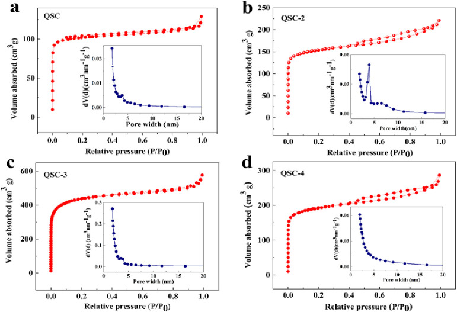
XPS analysis was performed to investigate the surface element composition and chemical bond characteristics of QSC-3 samples. The XPS survey spectrum (Figure 5a) shows that the QSC-3 sample primarily consists of carbon (80.01%), nitrogen (2.4%), and oxygen (17.59%) elements. The C 1s spectrum (Figure 5b) displays five distinct peaks, corresponding to different carbon bonds: graphite-type carbon C–C (284.8 eV), C–O (286.0 eV), C–O–C (287.2 eV), C=O (287.2 eV), and C–N (287.1 eV). These findings confirmed the partial graphitization of carbon materials.23 The N 1s spectrum (Figure 5c) displayed three peaks, namely pyridine-N (N-6, 398.5 eV), pyrrole-N (N-5, 399.5 eV), and quaternary-N (N-Q, 401.0 eV).24 Pyridine and pyrrole contribute to the pseudocapacitance effect and enhance the wettability of electrode materials, while quaternary-N facilitates electron transfer. All of these characteristics are advantageous for improving the capacitance of supercapacitors. The O 1s spectrum exhibited two peaks (Figure 5d) at binding energies of 533.2 eV (C–O) and 534.0 eV (C=O).24 The XPS results indicate that the QSC-activated carbon materials, comprising carbon, nitrogen, and oxygen elements, provide additional pseudocapacitance, enhance conductivity, offer more reactive active sites, and enhance the capacitive performance of carbon electrode materials.
XPS spectrum (a), C 1s (b), N 1s (c), and O 1s (d) of QSC-3.
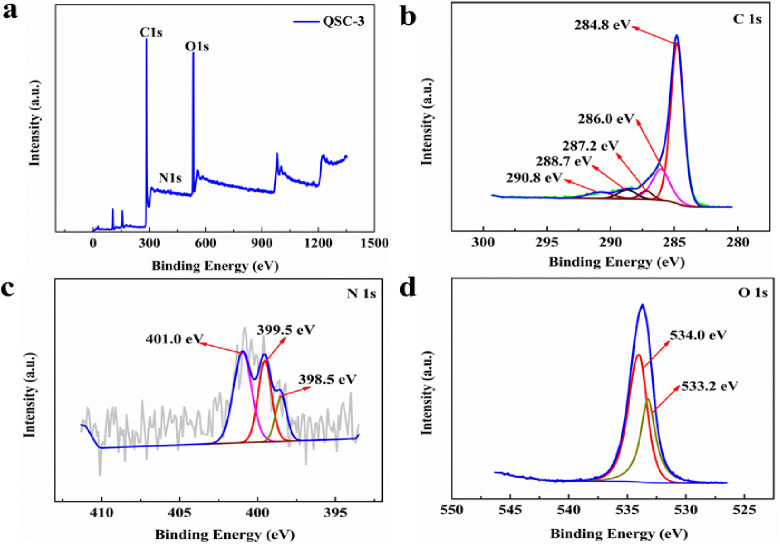
To evaluate the electrochemical properties of the synthesized carbon materials, a three-electrode system was employed in a 3 M KOH electrolyte for conducting comprehensive CV, GCD, and EIS tests on QSC and QSC-x (x = 2, 3, and 4) electrode materials. Figure 6a depicts the CV performance of the QSC-based electrode material at a scanning rate of 20 mVs–1. All the samples exhibited quasi-rectangular shapes with a noticeable reversible hump, indicating typical EDLC behavior. However, the CV curve displayed slight deformation, which could be attributed to the pseudocapacitance generated by the nitrogen and oxygen functional groups. Notably, the CV curve of QSC-3 displayed a larger area and a more rectangular shape compared with the others, signifying a rapid electrochemical response and high specific capacitance of QSC-3. At different scanning speeds (5–100 mV s–1), the CV curves of QSC, QSC-2, QSC-3, and QSC-4 (Figure 6c–f) consistently maintained a good rectangular shape, indicative of excellent capacitance behavior and favorable charge–discharge reversibility. Among the tested materials, QSC-3 exhibited the most outstanding capacitance performance with fast charge propagation kinetics and excellent reversibility, surpassing QSC, QSC-2, and QSC-4. The hierarchical porous structure and diverse pore size distribution of the prepared samples facilitated easy access for electrolyte ions, resulting in low resistance and enhanced ion transport, thereby improving the capacitive performance of the electrode.
(A) CV curves at 20 mVs–1; (b) GCD curves at 0.5 A g–1; (c–f) CV curves of QSC, QSC-2, QSC-3, and QSC-4 at 5–100 mVs–1.
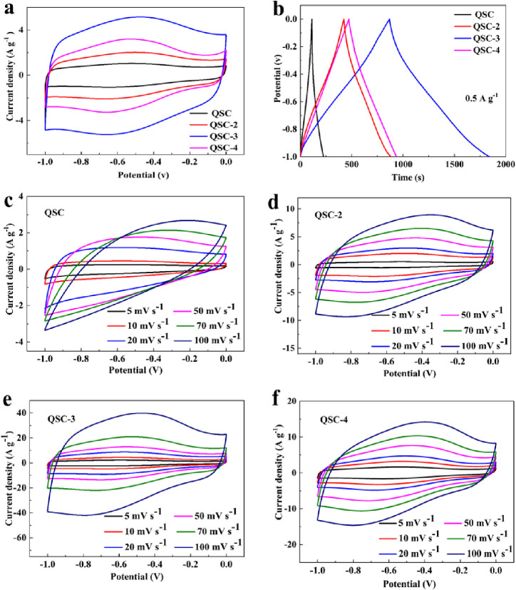
Figure 6b shows the GCD curve of the QSC-based electrode material at a current density of 0.5 A g–1. The GCD curve displays an isosceles triangle, confirming the excellent double-layer characteristics and favorable reversibility of the QSC-based electrode material. At a current density of 0.5 A g–1, the specific capacitance of QSC (55.9 F g–1), QSC-2 (232.1 F g–1), QSC-3 (469.5 F g–1), and QSC-4 (222.9 F g–1) samples was calculated using Eq 1. Notably, QSC-3 exhibited a significantly higher specific capacitance than the other samples, indicating its superior charge storage potential, consistent with the CV test results. This can be attributed to the large specific surface area and interconnected 3D porous structure of QSC-3 obtained after activation and etching with K2CO3. These characteristics provide a low-resistance pathway for electrolyte ion diffusion, while the self-doping of heteroatoms enhances the surface wettability of the material. The decrease in specific capacitance observed for QSC-4 is attributed to the excessive amount of K2CO3 and the strong etching effect, leading to pore collapse and a reduced charge storage capacity. Figure 7a–d illustrate the GCD profiles of QSC, QSC-2, QSC-3, and QSC-4 samples at current densities ranging from 0.5 A g–1 to 10.0 A g–1. The GCD curves maintain their symmetrical triangle shape throughout the range. Even at a high current density of 10 A g–1, the GCD curve remains unchanged, indicating the excellent rate performance of the material. When compared with other reported biomass carbon materials, the hierarchical porous structure materials synthesized from quinoa straw precursor and green activator K2CO3 in this study exhibit a large specific surface area and high specific capacitance (Table 2).
(a–d) At 0.5–10 A g–1, GCD curves of QSC, QSC-2, QSC-3, and QSC-4.
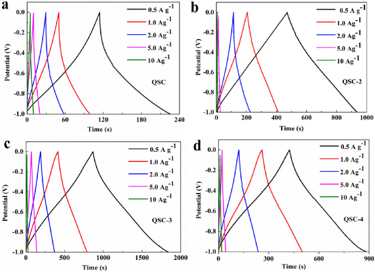
| carbon precursor | activator | SBET (m2/g–1) | maximum capacitance (F g–1) | current density (A g–1) | electrolyte | ref. |
|---|---|---|---|---|---|---|
| faidherbia albida fruit shell | KOH | 525 | 426.7 | 0.5 | 3 M KOH | (10) |
| corn straw | KOH | 1229 | 285 | 0.5 | 6 M KOH | (11) |
| tobacco straw | Nano-ZnO | 1293 | 220.7 | 1 | 6 M KOH | (12) |
| Typha angustifolia | KHCO3 | 1654 | 317.2 | 1 | 6 M KOH | (13) |
| rapeseed cake | K2CO3 | 1641 | 358 | 0.05 | 3 M KOH | (14) |
| hemp straw | KOH | 1105 | 273 | 0.5 | 6 M KOH | (15) |
| wheat straw | CaCl2 | 892 | 275 | 0.2 | 6 M KOH | (16) |
| quinoa straw | K2CO3 | 1802 | 469.5 | 0.5 | 3 M KOH | this work |
Cyclic stability is a crucial parameter for evaluating electrode materials. The cyclic stability of all QSC materials was assessed at a current density of 5 A g–1 (Figure 8a). After 10 000 cycles, the capacitance retention rates for QSC, QSC-2, QSC-3, and QSC-4 were determined to be 93.6%, 94.8%, 97.8%, and 95.5%, respectively. Remarkably, the capacity decay of QSC-3 was merely 2.2% of the initial value, indicating the excellent electrochemical stability and reversibility of carbon materials derived from quinoa straw.
(a) Cycling stability at 5 A g–1, and (b) Nyquist plots of QSC, QSC-2, QSC-3, and QSC-4.
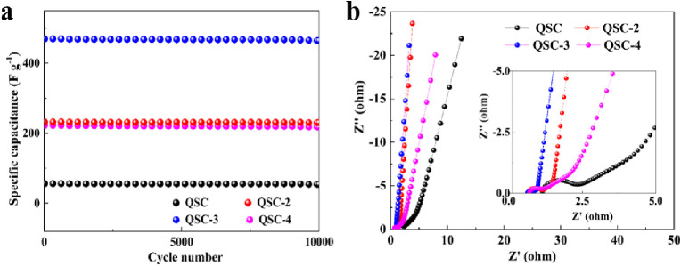
To further investigate the electrochemical performance of the synthesized materials, electrochemical impedance spectroscopy (EIS) was conducted on the quinoa straw-derived carbon material electrode, and the corresponding EIS diagram is presented in Figure 8b. The Nyquist plots exhibit a semicircle (at high frequency) and an inclined curve (at medium to low frequency).25 The diameter of the semicircle at high frequency represents the charge transfer resistance between the electrode and the electrolyte with a smaller radius indicating a lower charge transfer resistance. The intercept of the semicircle with the x-axis reflects the equivalent series resistance of the electrode. Based on the fitting results, QSC-3 demonstrates a lower high-frequency resistance compared to the other samples, indicating superior conductivity and charge transfer ability. This characteristic can be attributed to its large specific surface area and well-suited porous structure. At low frequency, the slope of the line for QSC-3 is relatively small, indicating facile ion intercalation and delamination within the electrode. The low ion diffusion resistance and charge transfer resistance primarily arise from the extensive contact area between the electrode and the electrolyte, enhancing the materials’ wettability and promoting charge transfer and ion diffusion.
To further explore the practical potential applications of the material based on quinoa straw, symmetric supercapacitors devices based on the QSC-3 electrode were assembled, and the electrochemical performance of the device (QSC-3//QSC-3) was tested in two different aqueous electrolytes (3 M KOH and 1 M Na2SO4).
Figure 9a–d tested the CV and GCD curves of QSC-3//QSC-3 devices at different voltages and a current density of 1A g–1. Figure 9a,c show that the CV curve shows a quasi-rectangular shape without deformation at electrolytes (3 M KOH and 1 M Na2SO4) and different voltage windows. Figure 9b shows that the GCD curves maintain good symmetry at voltage range from 1.1 to 1.5 V. The symmetry of the GCD curve deteriorates and the charging time prolongs at 1.6 V, indicating the ideal voltage window for QSC-3//QSC-3 is 1.5 V at 3 M KOH. Figure 9d displays that GCD curve shows significant deformation at 2.1 V. Therefore, at different scanning speeds and various current densities, the CV and GCD curves were tested in electrolytes (3 M KOH and 1 M Na2SO4) with voltage windows of 1.5 and 2.0 V. Within different voltage windows (0–1.5 V and 0–2.0 V), the CV patterns (Figure 10a,c) of QSC-3//QSC-3 devices at different scanning rates of 10–100 mVs–1 exhibit a rectangular shape, indicating that the device has fast charge and discharge rates and ideal EDLC energy storage behavior. Figure 10b,d show the GCD curves of the device at different current densities (0.5–10.0 A g–1). As the current density increases, the charge–discharge curves were almost symmetrical, exhibiting good reversibility and also proving the dominant role of EDLC energy storage effect. In addition, by comparing the CV and GCD curves tested in two electrolytes (3 M KOH and 1 M Na2SO4), it was demonstrated that QSC-3//QSC-3 had a wide voltage window range of 2.0 V at 1 M Na2SO4, indicating its potential for high-range voltage applications.
(A) CV curves at 30 mVs–1 and (b) GCD curves at 1 A g–1 with voltage (1.1 V–1.6 V) in 3 M KOH, (c) CV curves at 30 mVs–1 and (d) GCD curves at 1 A g–1 voltage (1.4 V–2.1 V) in 1 M Na2SO4.
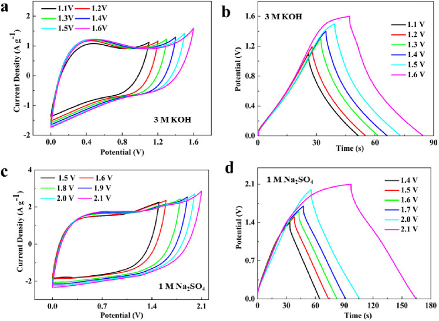
(A) CV curves at 5–100 mVs–1 and (b) GCD curves at 0.5–10 A g–1 in 3 M KOH, (c) CV curves at 5–100 mVs–1and (d) GCD curves at 0.5–10A g–1 in 1 M Na2SO4.
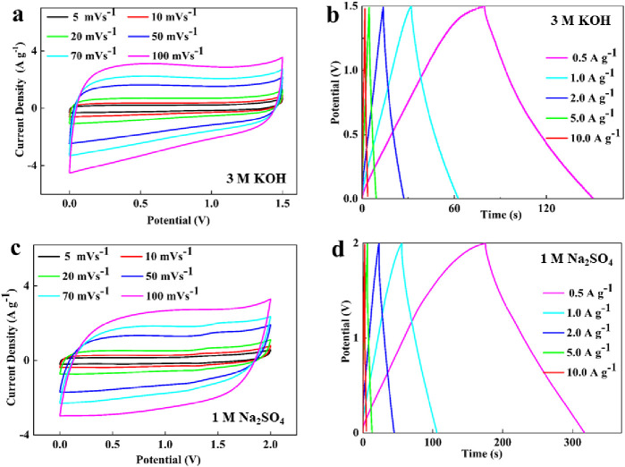
Figure 11a,c illustrate the cyclic stability of the symmetric supercapacitor QSC-3//QSC-3. Under different electrolytes (3 M KOH and 1 M Na2SO4) and a current density of 5 A g–1, after 10 000 consecutive GCD cycles, the capacitance retention rates were 97.55% and 96.2%, respectively. There was no significant change in the charge–discharge curves during the middle 8 cycles, indicating excellent cycling stability of the device.
(a,c) The cycle stability measures at 5 A g–1(3 M KOH and 1 M Na2SO4), (b,d) Energy density at different power densities and electrolyte (3 M KOH and 1 M Na2SO4).
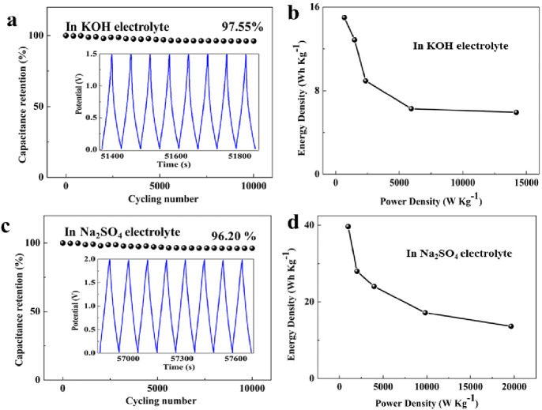
The energy densities of the QSC-3//QSC-3 system at various power densities are presented in Figure 11,bd, calculated using Eq3s 33 and 4. In the 3 M KOH solution, the device achieved an energy density of 15.0 Wh kg–1 at a power density of 689.7 W kg–1 (0.5 A g–1). In the 1 M Na2SO4 electrolyte, at a current density of 0.5 A g–1, the power density reached 999.0 W kg–1, and the energy density reached an impressive value of 39.68 Wh kg–1. Furthermore, the device exhibited a notable energy density of 13.66 Wh kg–1 even at an ultrahigh power density of 19 650 W kg–1. These values exceed those reported in some previous literature reports (as shown in Table 3). The high energy density can be attributed to the wide operating voltage window of the supercapacitors in neutral solutions. These results indicate that the QSC-3//QSC-3 devices demonstrate excellent electrochemical performance, primarily attributed to the utilization of waste biomass precursors doped with heteroatoms. The materials prepared through high-temperature carbonization and K2CO3 activation possess a high specific surface area, abundant pore structure, improved surface wettability of electrode materials, and increased active sites and provide a low-resistance channel for charge transfer.
| carbon precursor | electrolyte | voltage window | Ppower density maximum (Wkg–1) | ref. | |||
|---|---|---|---|---|---|---|---|
| wintersweet-fruit-shell | 1 M Na2SO4 | 1–2.0 V | 7000 | (26) | |||
| longan shell | 1 M Li2SO4 | 1–1.6 V | 15930 | (27) | |||
| Lentinus edodes | 1 M H2SO4 | 0–1.0 V | 5000 | (28) | |||
| bagasses | 6 M H2SO4 | 0–1.0 V | 10673 | (29) | |||
| quinoa straw | 1 M Na2SO4 | 1–2.0 V | 19650 | this work | |||
In summary, a high-performance porous carbon electrode material was prepared from quinoa straw through K2CO3 activation and carbonization processes with the aim to achieve superior performance in supercapacitors. This study represents the first utilization of waste quinoa straw as a new eco-friendly carbon source for the production of high-performance supercapacitor electrode materials. The resulting QSC-3 carbon material exhibits a significant nitrogen content (2.4%) and oxygen content (17.59%), which enhances the material’s surface wettability and conductivity. Simultaneously, the material possesses a high specific surface area of 1802 m2 g–1 and a rich pore structure (VTotal = 0.756 cm3 g–1), facilitating the diffusion of electrolyte ions. The combination of a high specific surface area and heteroatom functional groups synergistically contributes to the excellent electrochemical performance of QSC-3, achieving a specific capacitance of up to 469.5 F g–1 at 0.5 A g–1. Moreover, the symmetrical supercapacitor QSC-3//QSC-3, assembled in a 1 M Na2SO4 electrolyte system, demonstrates a wide operating voltage window of 0–2.0 V and a high energy density of 39.68 Wh kg–1. Furthermore, the device exhibits outstanding cycle life, with a capacitance retention of 96.20% after 10 000 cycles. This work holds promising application prospects for utilizing waste quinoa straw biomass to produce low-cost, environmentally friendly, carbon-based supercapacitor electrode materials with excellent electrochemical performance.
The authors express sincere gratitude for the financial support received from the Open Project of Salt Lake Chemical Engineering Research Complex, Qinghai University (Grant No. 2023-DXSSKF-Z04) and the Science and Technology Commission of Shanghai Municipality (Grant No. 23002400300).
Tianyi Ma–School of Materials Science and Engineering, East China University of Science and Technology, Shanghai, 200237, China
The authors declare no competing financial interest.
Feng S.; Wu Z.-S. A perspective on graphene for supercapacitors: Current status and future challenges. J. Energy. Chem. 2021, 53, 354–357. 10.1016/j.jechem.2020.05.041.Boruah B. D.; Misra A. Voltage generation in optically sensitive supercapacitor for enhanced performance. ACS Appl. Energy Mater. 2019, 2, 278–286. 10.1021/acsaem.8b01248.
Winter M.; Brodd R. J. What are batteries, fuel cells and supercapacitors. Chem. Rev. 2004, 104 (10), 4245–4270. 10.1021/cr020730k.
Meng Q.; Cai K.; Chen Y.; Chen L. Research progress on conducting polymer based supercapacitor electrode materials. Nano Energy 2017, 36, 268–285. 10.1016/j.nanoen.2017.04.040.
Ma J.; Wang L.; Yu F. Water-enhanced performance in capacitive deionization for desalination based on grapheme gel as electrode material. Electrochim. Acta 2018, 263, 40–46. 10.1016/j.electacta.2018.01.041.Teimuri-Mofrad R.; Abbasi H.; Hadi R. Graphene oxide-grafted ferrocene moiety via ring opening polymerization (ROP) as a supercapacitor electrode material. Polymer 2019, 167, 138–145. 10.1016/j.polymer.2019.01.084.Li P.; Li H.-P.; Zhang X.-L.; Zheng X.-C. Facile fabrication and improved super capacitive performance of exfoliated grapheme with hierarchical porous structure. J. Energy Storage 2021, 33, 102044. 10.1016/j.est.2020.102044.
Li M.; Xiao H.; Zhang T.; Li Q.; Zhao Y. Activated Carbon Fiber Derived from Sisal with Large Specific Surface Area for High-Performance Supercapacitors. ACS Sustainable Chem. Eng. 2019, 7 (5), 4716–4723. 10.1021/acssuschemeng.8b04607.Li Y.; Shan L.; Sui Y.; Qi J.; Wei F.; He Y.; Meng Q.; Ren Y.; Liu J. Ultrathin Ni-CoLDH nanosheets grown on carbon fiber clothvia electrodeposition for high-performance supercapacitors. J. Mater. Sci.: Materi. Electron. 2019, 30 (14), 13360–13371. 10.1007/s10854-019-01703-4.Wang K.; Song Y.; Yan R.; Zhao N.; Tian X.; Li X.; Guo Q.; Liu Z. High capacitive performance of hollow activated carbon fibers derived from willow catkins. Appl. Surf. Sci. 2017, 394, 569–57741. 10.1016/j.apsusc.2016.10.161.
Childress A.; Ferri K.; Rao A. M. Enhanced supercapacitor performance with binder-free helically coiled carbon nanotube electrodes. Carbon 2018, 140, 377–384. 10.1016/j.carbon.2018.08.064.Ghosh M.; Rao G. M. Vertically aligned tree-like carbon nanostructure as an electrode of the electrochemical capacitor. J. Solid State Electrochem. 2019, 23 (5), 1605–1611. 10.1007/s10008-019-04253-1.Kang C.-S.; Ko Y.-I.; Fujisawa K.; Yokokawa T.; Kim J. H.; Han J. H.; Wee J.-H.; Kim Y. A.; Muramatsu H.; Hayashi T. Hybridized double-walled carbon nanotubes and activated carbon as free standing electrode for flexible supercapacitor applications. Carbon Lett. 2020, 30 (5), 527–534. 10.1007/s42823-020-00122-4.
Samanci M.; Daş E.; Yurtcan A. B. Carbon aerogel and their polypyrrole composites used as capacitive materials. Int. J. Energy Res. 2021, 45, 1729–1747. 10.1002/er.5841.
Shang Z.; An X.; Zhang H.; Shen M.; Baker F.; Liu Y.; Liu L.; Yang J.; Cao H.; Xu Q.; Liu H.; Ni Y. Houttuynia-derived nitrogen-doped hierarchically porous carbon for high-performance supercapacitor. Carbon 2020, 161, 62–70. 10.1016/j.carbon.2020.01.020.Taer E.; Apriwandi A.; Purba Z.; Taslim R. Porous carbon nanofiber monolith binder-free derived from stink bean pod peel as electrode material for symmetric supercapacitor application. J. Ovonic Res. 2021, 17 (5), 487–497.Yan D.; Liu L.; Wang X.; Xu K.; Zhong J. Biomass-derived activated carbon nanoarchitectonics with hibiscus flowers for high performance supercapacitor electrode applications. Chem. Eng. Technol. 2022, 45 (4), 649–657. 10.1002/ceat.202100585.Zhang Y.; Cai T.; Huang J.; Xing W.; Yan Z. Functionalized activated carbon prepared form petroleum coke with high-rate super-capacitive performance. J. Mater. Res. 2016, 31 (23), 3723–3730. 10.1557/jmr.2016.405.Peng H.; Ma G.; Sun K.; Zhang Z.; Yang Q.; Lei Z. Nitrogen-doped interconnected carbon nanosheets from pomelo mesocarps for high performance supercapacitors. Electrochim. Acta 2016, 190, 862–871. 10.1016/j.electacta.2015.12.195.Rajendiran R.; Nallal M.; Park K. H.; Li L. O.; Kim H.-J.; Prabakar K. Mechanochemical assisted synthesis of heteroatoms inherited highly porous carbon from biomass for electrochemical capacitor and oxygen reduction reaction electrocatalysis. Electrochim. Acta 2019, 317, 1–9. 10.1016/j.electacta.2019.05.139.
Guan L.; Pan L.; Peng T.; Gao C.; Zhao W.; Yang Z.; Hu H.; Wu M. Synthesis of biomass-derived nitrogen-doped porous carbon nanosheests for high-performance supercapacitors. ACS Sustainable Chem. Eng. 2019, 7 (9), 8405–8412. 10.1021/acssuschemeng.9b00050.Chen X.; Chi M.; Xing L.; Xie X.; Liu S.; Liang Y.; Zheng M.; Hu H.; Dong H.; Liu Y.; Jiang S. P.; Xiao Y. Natural plant template-derived cellular framework porous carbon as a high-rate and long-life electrode material for energy storage. ACS Sustainable Chem. Eng. 2019, 7 (6), 5845–5855. 10.1021/acssuschemeng.8b05777.Sun N.; Li Z.; Zhang X.; Qin W.; Zhao C.; Zhang H.; Ng D. H. L.; Kang S.; Zhao H.; Wang G. Hierarchical porous carbon materials derived from kelp for superior capacitive applications. ACS Sustainable Chem. Eng. 2019, 7 (9), 8735–8743. 10.1021/acssuschemeng.9b00635.Demir M.; Ashourirad B.; Mugumya J. H.; Saraswat S. K.; El-Kaderi H. M.; Gupta R. B. Nitrogen and oxygen dual-doped porous carbons prepared from pea protein as electrode materials for high performance supercapacitors. Int. J. Hydrogen Energy 2018, 43 (40), 18549–18558. 10.1016/j.ijhydene.2018.03.220.Zhao Y.-Q.; Lu M.; Tao P.-Y.; Zhang Y.-J.; Gong X.-T.; Yang Z.; Zhang G.-Q.; Li H.-L. Hierarchically porous and heteroatom doped carbon derived from tobacco rods for super-capacitors. J. Power Sources 2016, 307, 1391–400. 10.1016/j.jpowsour.2016.01.020.
Mohammed A. A.; Chen C.; Zhu Z. Green and high performance all-solid-state supercapacitors based on MnO2/Faidherbia albida fruit shell derived carbon sphere electrodes. J. Power Sources 2019, 417, 1–13. 10.1016/j.jpowsour.2019.02.003.
Ma H.; Chen Z.; Wang X.; Liu Z.; Liu X. A simple route for hierarchically porous carbon derived from corn straw for supercapacitor application. J. Renewable Sustainable Energy 2019, 11, 024102. 10.1063/1.5063676.
Jiang B.; Cao L.; Yuan Qi; Ma Z.; Huang Z.; Lin Z.; Zhang P. Biomass Straw-Derived Porous Carbon Synthesized for Supercapacitor by Ball Milling. Materials 2022, 15 (3), 924. 10.3390/ma15030924.
Wang S.; Mei Y.; Shao Z.; Wang J.; Tan Z.; Qiu Z.; Wang M.; Zheng H. Biomass Hierarchical Porous Carbonized Typha angustifolia Prepared by Green Pore-Making Technology for Energy Storage. ACS Omega 2023, 8, 1353–1361. 10.1021/acsomega.2c06782.
Bi H.; He X.; Zhang H.; Li H.; Xiao N.; Qiu J. N, P co-doped hierarchical porous carbon from rapeseed cake with enhanced supercapacitance. Renewable Energy 2021, 170, 188–196. 10.1016/j.renene.2021.01.099.
Tian X.; Ma H.; Li Z.; Yan S.; Ma L.; Yu F.; Wang G.; Guo X.; Ma Y.; Wong C. Flute type micropores activated carbon from cotton stalk for high performance supercapacitors. J. Power Sources 2017, 359, 88–96. 10.1016/j.jpowsour.2017.05.054.
Dai C.; Wan J.; Shao J.; Ma F. Hollow activated carbon with unique through-pore structure derived from reed straw for high-performance supercapacitors. Mater. Lett. 2017, 193, 279–282. 10.1016/j.matlet.2017.02.007.
Misnon I. I.; Zain N. K. M.; Aziz R. A.; Vidyadharan B.; Jose R. Electrochemical properties of carbon from oil palm kernel shell for high performance super-capacitors. Electrochim. Acta 2015, 174, 78–86. 10.1016/j.electacta.2015.05.163.Miyako E.; Sugino T.; Okazaki T.; Bianco A.; Yudasaka M.; Iijima S. Self-assembled carbon nanotube honeycomb networks using a butterfly wing template as a multifunctional nanobiohybrid. ACS Nano 2013, 7, 8736–8742. 10.1021/nn403083v.
Su Y.; Lu Z.; Cheng J.; Zhao X.; Chen X.; Gao L. Insulation board-derived N/O self-doped porous carbon as an electrode material for high-performance symmetric supercapacitors. New. J. Chem. 2021, 45, 17503–17512. 10.1039/D1NJ03157K.Yang S.; Wang S.; Liu X.; Li L. Biomass derived interconnected hierarchical micro-meso-macro-porous carbon with ultrahigh capacitance for supercapacitors. Carbon 2019, 147, 540–549. 10.1016/j.carbon.2019.03.023.
Yu J.; Wu J.; Yang Z.; Cai J.; Zhang Z. A cheese-shaped bio-carbon for high performance supercapacitors prepared from Juncus effuses. L. J. Energy Storage 2020, 30, 101531. 10.1016/j.est.2020.101531.
Sun L.; Zhou Y.; Li L.; Zhou H.; Liu X.; Zhang Q.; Gao B.; Meng Z.; Zhou D.; Ma Y. Facile and green synthesis of 3D honeycomb-like N/S-codoped hierarchically porous carbon materials from bio-protic salt for flexible, temperature-resistant supercapacitors. Appl. Surf. Sci. 2019, 467, 382–390. 10.1016/j.apsusc.2018.10.192.Pourhosseini S. E. M.; Norouzi O.; Salimi P.; Naderi H. R. Synthesis of a novel interconnected 3D pore network algal biochar constituting iron nano particles derived from a harmful marine biomass as high performance asymmetric supercapacitor electrodes. ACS Sustainable Chem. Eng. 2018, 6, 4746–4758. 10.1021/acssuschemeng.7b03871.
Rajesh M.; Manikandan R.; Park S.; Kim B. C.; Cho W.-J.; Yu K. H.; Raj C. J. Pinecone biomass-derived activated carbon: the potential electrode material for the development of symmetric and asymmetric supercapacitors. Int. J. Energy Res. 2020, 44, 8591–8605. 10.1002/er.5548.
Rajesh M.; Manikandan R.; Park S.; Kim B. C.; Cho W.; Yu K. H.; Raj C. J. Pinecone biomass-derived activated carbon: the potential electrode material for the development of symmetric and asymmetric supercapacitors. Int. J. Energy Res. 2020, 44, 8591–8605. 10.1002/er.5548.
Shi L.; Jin L.; Meng Z.; Sun Y.; Li C.; Shen Y. A novel porous carbon material derived from the byproducts of bean curd stick manufacture for high-performance supercapacitor use. RSC Adv. 2018, 8, 39937–39947. 10.1039/C8RA08664H.
Yin H.; Shao H.; Daffos B.; Taberna P.-L.; Simon P. The effects of local graphitization on the charging mechanisms of microporous carbon supercapacitor electrodes. Electrochem. Commun. 2022, 137, 107258. 10.1016/j.elecom.2022.107258.
Kalpana D.; Karthikeyan K.; Renganathan N. G.; Lee Y. S. Camphoric carbon nanobeads - A new electrode material for supercapacitors. Electrochem. Commun. 2008, 10, 977–979. 10.1016/j.elecom.2008.04.027.Liu B.; Liu Y.; Chen H.; Yang M.; Li H. Oxygen and nitrogen co-doped porous carbon nanosheets derived from Perilla frutescens for high volumetric performance supercapacitors. J. Power Sources 2017, 341, 309–317. 10.1016/j.jpowsour.2016.12.022.Yoo Y.; Kim M.-S.; Kim J.-K.; Kim Y. S.; Kim W. Fast-response supercapacitors with graphitic ordered mesoporous carbons and carbon nanotubes for AC line filtering. J. Mater. Chem. A 2016, 4, 5062–5068. 10.1039/C6TA00921B.Lee K. S.; Park M. S.; Kim J.-D. Nitrogen doped activated carbon with nickel oxide for high specific capacitance as supercapacitor electrodes. Colloids Surf., A 2017, 533, 323–329. 10.1016/j.colsurfa.2017.09.008.
Wu W.; Zheng H.; Zhang Y.; Wang Q.; Huang W.; Xiang J.; Yang X.; Lu W.; Zhang Z.; Wang S. Preparation of high performance supercapacitors with nitrogen and oxygen self-doped porous carbon derived from wintersweet-fruit-shell. J. Phys. Chem. Solids 2023, 177, 111274. 10.1016/j.jpcs.2023.111274.
Liu Y.; Qu X.; Huang G.; Xing B.; Zhang F.; Li B.; Zhang C.; Cao Y. 3-Dimensional Porous Carbon with High Nitrogen Content Obtained from Longan Shell and Its Excellent Performance for Aqueous and All-Solid-State Supercapacitors. Nanomaterials 2020, 10, 808. 10.3390/nano10040808.
Tang D.; Luo Y.; Lei W.; Xiang Q.; Ren W.; Song W.; Chen K.; Sun J. Hierarchical porous carbon materials derived from waste lentinus edodes by a hybrid hydrothermal and molten salt process for supercapacitor applications. Appl. Surf. Sci. 2018, 462, 862–871. 10.1016/j.apsusc.2018.08.153.
Feng H.; Hu H.; Dong H.; Xiao Y.; Cai Y.; Lei B.; Liu Y.; Zheng M. Hierarchical structured carbon derived from bagasse wastes: A simple and efficient synthesis route and its improved electrochemical properties for high-performance supercapacitors. J. Power Sources 2016, 302, 164–173. 10.1016/j.jpowsour.2015.10.063.